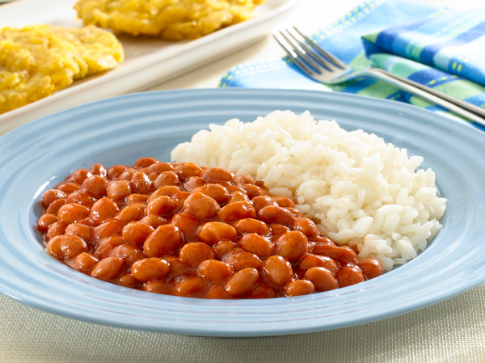

Puerto Rican Beans

Beans recipe from Puerto Rico that is great with white rice and either red or white meat. Recipe is a family one that has been passed down from my Grandparents, to my mother and then to me.
Ingredients:
- Pink Beans
- Sofrito
- Tomato Sauce
- Sazon
- Jamon (Ham bouillon, powder or cubes)
- Adobo
- Garlic Powder
- Oregano
Steps:
- on medium heat place 1 tablespoon of oil in a pot (either Corn, Veg, Canola, Olive)
- 2 Tablespoons of Sofrito
- 3 Tablespoons of Tomato Sauce
- 1 packet of Sazon
- 1 packet/cube of Jamon (Ham bouillon)
- 2 Tablespoons of Adobo
- 2 Tablespoons of Garlic Powder
- 2 Tablespoons of Oregano
- Mix ingredients and let simmer
- Open bean can and remove included liquid
- poor beans into pot and add half a can of water
- when simmer, lower heat to low-medium and stir frequently for 20 minutes.